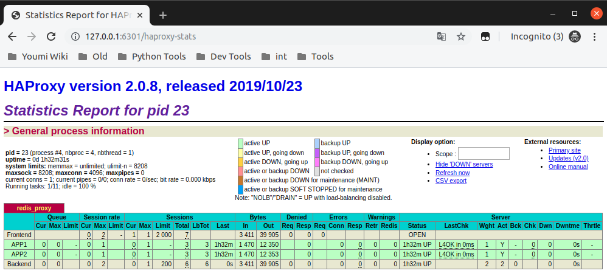
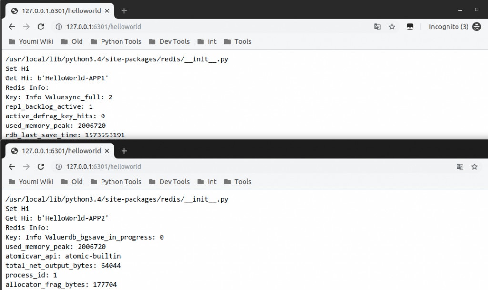

Docker实践
学习背景
- 没有接触过容器
- 不太了解微服务
- 偶尔使用Linux
概述
什么是Docker？不妨先来看一下为什么需要Docker：
微服务
微服务是模块化的，每个不同的服务独立运行，因此需要满足能够独立部署和一定的可伸缩性。在部署过程中每一处的人为操作都伴随着出错的风险，所以必须有方法来消除这种服务部署的风险。
Docker为这种使用场景提供了解决方案，使用容器（Container）来部署微服务可以做到：
- 将部署过程标准化和自动化
- 环境隔离，满足微服务的独立运行要求
CI/CD
CI是不断提交代码并且打包编译，然后自动使用测试用例验证来保障改动内容对功能的影响的一种实践；CD是CI的延伸，它将通过CI验证的内容自动地发布和部署到指定环境。构建CI/CD时一般会需要做到：
- 环境可控
- 快速高效部署，流程化执行
- 可并行运行测试
使用Docker可以满足以上的需求，使开发者专注于开发而运维专注于项目部署。
Get started with Docker
docker-katas项目中有一些Docker的基本知识讲解和实践，主要包括Docker的各种常用概念及命令，如：
- Docker的镜像（Images）、容器（Containers）、守护进程（Docker daemon）、客户端（Docker client）、公共仓库（Docker Hub）等概念
- 镜像的拉取（
pull）、容器的创建与运行（run）等命令
在完成docker-katas练习后，基于这些内容以及参考相关书籍，本次实践的目标是实现一套简单的服务，需要包括：
- 使用Docker的数据卷（Volume）来进行数据的共享
- 使用Docker的网络来使几个容器间可以进行数据交互
- 使用Docker的端口转发
Volume
Docker通过数据卷来实现不同容器间、容器与宿主机间数据的共享。最容易想到的场景就是在宿主机上修改服务的配置文件然后运行在不同的容器间，这里配置一套Redis服务使得容器的redis-server使用本地的配置文件运行。
以Redis镜像创建容器，将本地的配置文件/data/redis-master/redis.conf挂载到容器的/data/redis.conf中，并且执行redis-server /data/redis.conf命令启动redis-server。
# duck@duck-MS-7A34:~$ sudo docker run -d --name redis-master -v /data/redis-master/redis.conf:/data/redis.conf redis redis-server /data/redis.conf</code></pre>
因为redis-master使用-d后台运行，因此redis.conf中的后台运行需要改为关闭：
# duck@duck-MS-7A34:~$ sudo vim /data/redis-master.conf
aemonize no</code></pre>
现在可以看到容器服务的运行状态：
# duck@duck-MS-7A34:~$ sudo docker ps -a
CONTAINER ID IMAGE COMMAND CREATED STATUS PORTS NAMES
f45e340eb1ba redis "docker-entrypoint.s…" 42 hours ago Up 56 minutes 6379/tcp redis-master</code></pre>
容器间连接
Docker容器可以通过--link连接其他的容器，具体示例如下。
因为之前已经创建过一个名为redis-master的容器了，现在再创建一台基于ubuntu镜像的容器，并且与redis-master连接：
# duck@duck-MS-7A34:~$ sudo docker run -it --name ubuntu1 --link redis-master:redis-master ubuntu /bin/bash</code></pre>
创建完毕后在这个ubuntu1容器上查看/etc/hosts发现：
# root@5e0ca7fa39ef:/# cat /etc/hosts
172.17.0.2 redis-master f45e340eb1ba</code></pre>
因此在ubuntu1中可以通过redis-master访问另一台容器。
现在为之前创建的redis-master容器配置上两个slave节点。
和之前类似，需要让新的redis容器使用本地的配置，因此需要-v参数；并且需要让slave节点连接上master节点，因此需要--link redis-master:redis-master参数；slave配置与master类似，但是要加上slaveof redis-master的配置项：
# duck@duck-MS-7A34:~$ sudo docker run -d --name redis-slave1 -v /data/redis-slave/redis.conf:/data/redis.conf --link redis-master:master redis redis-server /data/redis.conf
# duck@duck-MS-7A34:~$ sudo docker run -d --name redis-slave2 -v /data/redis-slave/redis.conf:/data/redis.conf --link redis-master:master redis redis-server /data/redis.conf</code></pre>
现在docker管理中可以看到3个容器在运行中：
uck@duck-MS-7A34:~$ sudo docker ps -a
CONTAINER ID IMAGE COMMAND CREATED STATUS PORTS NAMES
bf991586e7c3 redis "docker-entrypoint.s…" 42 hours ago Up About an hour 6379/tcp redis-slave2
2831c5a828da redis "docker-entrypoint.s…" 42 hours ago Up About an hour 6379/tcp redis-slave1
f45e340eb1ba redis "docker-entrypoint.s…" 42 hours ago Up About an hour 6379/tcp redis-master</code></pre>
进入redis-master中查看Redis状态：
# duck@duck-MS-7A34:~$ sudo docker exec -it f45e340eb1ba /bin/bash
# root@f45e340eb1ba:/data# redis-cli
## 127.0.0.1:6379> info</code></pre>
在返回的内容中可以看到
# Replication
role:master
connected_slaves:2
slave0:ip=172.17.0.3,port=6379,state=online,offset=6682,lag=1
slave1:ip=172.17.0.4,port=6379,state=online,offset=6682,lag=1
master_replid:d7713802a61c75bd794c282accda8add66631804
master_replid2:0000000000000000000000000000000000000000
master_repl_offset:6682
second_repl_offset:-1
repl_backlog_active:1
repl_backlog_size:1048576
repl_backlog_first_byte_offset:1
l_backlog_histlen:6682</code></pre>
创建一个键检查是主从同步是否正常：
# 127.0.0.1:6379> set 1 1</code></pre>
进入redis-slave1中查看Redis状态：
# duck@duck-MS-7A34:~$ sudo docker exec -it 2831c5a828da /bin/bash
# root@2831c5a828da:/data# redis-cli
# 127.0.0.1:6379> info</code></pre>
其中主从Replication部分显示当前节点工作在slave模式：
# Replication
role:slave
master_host:master
master_port:6379
master_link_status:up
master_last_io_seconds_ago:2
master_sync_in_progress:0
slave_repl_offset:6556
slave_priority:100
slave_read_only:1
connected_slaves:0
master_replid:d7713802a61c75bd794c282accda8add66631804
master_replid2:0000000000000000000000000000000000000000
master_repl_offset:6556
second_repl_offset:-1
repl_backlog_active:1
repl_backlog_size:1048576
repl_backlog_first_byte_offset:15
l_backlog_histlen:6542</code></pre>
查看数据同步是否正常：
# 127.0.0.1:6379> keys *
1) "1"</code></pre>
App与HAProxy
最后再来加上两个App服务以及使用HAProxy进行Round-Robin的负载均衡。
创建两个Django容器，我们需要在本地修改代码，因此需要使用-v将代码目录与本地目录连通；App需要连接Redis数据库，因此需要--link连接Redis主节点：
# duck@duck-MS-7A34:~$ sudo docker run -it -d --name app1 --link redis-master:db -v /data/App1:/usr/src/app django /bin/bash
# duck@duck-MS-7A34:~$ sudo docker run -it -d --name app2 --link redis-master:db -v /data/App2:/usr/src/app django /bin/bash</code></pre>
之后进入容器中，安装对应包及根据Django的命令创建一系列的内容，主要包括：
- pip安装redis
- Django创建项目redisweb
- Django生成应用helloworld
完成之后可以在我们宿主机挂在的目录看到有对应的文件：
# duck@duck-MS-7A34:/data/app1$ tree
.
└── dockerweb
└── redisweb
├── db.sqlite3
├── helloworld
│ ├── admin.py
│ ├── apps.py
│ ├── __init__.py
│ ├── migrations
│ │ └── __init__.py
│ ├── models.py
│ ├── tests.py
│ └── views.py
├── manage.py
└── redisweb
├── __init__.py
├── settings.py
├── urls.py
└── wsgi.py</code></pre>
其中我们在redisweb/helloworld/views.py中添加对应的逻辑并且配置好路由urls.py和项目设置settings.py，最后通过python manage.py runserver 0.0.0.0:8001命令启动，就可以进行访问。
接下来创建HAProxy容器，HAProxy需要和App1和App2连接，因此加上--link参数；并且为了让容器的端口和宿主机的映射起来，添加-p参数；HAProxy的配置为了方便编辑，同样加上-v与本地配置目录互联：
# duck@duck-MS-7A34:~$ sudo docker run -it -d --name HAProxy --link app1:app1 --link app2:app2 -p 6301:6301 -v /data/haproxy:/tmp haproxy /bin/bash</code></pre>
HAProxy配置修改好后，在容器中使用配置启动HAProxy：
# root@8ef76bd496c3:/usr/local/sbin# haproxy -f haproxy.cfg</code></pre>
访问测试
因为之前已经将HAProxy容器的6301端口与本地6301端口映射，现在可以访问本地的6301端口查看HAProxy工作状态：
 然后再来访问Apps查看负载均衡是否生效：

容器应用搭建总结
假如这套应用改用传统的云服务（虚拟机）进行搭建，则会在部署上浪费额外的时间，例如：
- 云服务启动时间
- 各种软件包的安装时间，如Redis，HAProxy，Django环境配置
- 不同实例间的配置时间，如在实例上配置Host文件连接其他内网机器
通过改用Docker拉取镜像创建容器的方式实现，使得整个流程大为精简，免除了许多冗余的重复配置操作，特别适合独立的微服务构建。
docker-katas练习
因为练习与Django App实践有部分内容重复，因此只选取了部分练习展示。
07-building-an-image
了解使用Dockerfile创建镜像和镜像的分层。
# duck@duck-MS-7A34:~/script$ cat Dockerfile
# The base image
FROM ubuntu:latest
# Install python and pip
RUN apt-get update && apt-get install -y \
python-pip \
python-dev \
build-essential
# Install Python modules needed by the Python app
COPY requirements.txt /usr/src/app/
RUN pip install --no-cache-dir -r /usr/src/app/requirements.txt
# Copy files required for the app to run
COPY app.py /usr/src/app/
# Declare the port number the container should expose
EXPOSE 5000
# Run the application
WORKDIR /usr/src/app
CMD ["env", "FLASK_APP=app.py", "&&", "flask", "run", "--host=0.0.0.0"]</code></pre>
# duck@duck-MS-7A34:~/script$ sudo docker container run -p 8888:5000 --name myfirstapp myfirstapp
* Environment: production
WARNING: This is a development server. Do not use it in a production deployment.
Use a production WSGI server instead.
* Debug mode: off
* Running on http://0.0.0.0:5000/ (Press CTRL+C to quit)
172.17.0.1 - - [13/Nov/2019 02:58:50] "GET / HTTP/1.1" 200 -
172.17.0.1 - - [13/Nov/2019 02:58:50] "GET /favicon.ico HTTP/1.1" 404 -</code></pre>
09-multi-container
在多个容器构成的应用中，每次都手动管理各个容器非常麻烦，依靠Docker compose将这些逻辑汇聚在一起方便定义和运行。
使用Docker composer运行WP应用
# duck@duck-MS-7A34:~/script$ cat docker-compose.yaml
version: '3.1'
networks:
if_wordpress:
services:
wordpress_container:
image: wordpress
networks:
- if_wordpress
ports:
- 8080:80
environment:
WORDPRESS_DB_PASSWORD: wordpress
WORDPRESS_DB_HOST: mysql_container
mysql_container:
image: mysql:5.7
networks:
- if_wordpress
ports:
- 3306:3306
environment:
MYSQL_ROOT_PASSWORD: wordpress</code></pre>
# duck@duck-MS-7A34:~/script$ sudo docker-compose up -d
Creating network "script_if_wordpress" with the default driver
Creating script_wordpress_container_1 ... done
Creating script_mysql_container_1 ... done
# duck@duck-MS-7A34:~/script$ curl 127.0.0.1:8080/wp-admin/install.php?step=1
<!DOCTYPE html>
<html xmlns="http://www.w3.org/1999/xhtml" lang="en-US" xml:lang="en-US">
<head>
<meta name="viewport" content="width=device-width" />
<meta http-equiv="Content-Type" content="text/html; charset=utf-8" />
<meta name="robots" content="noindex,nofollow" />
<title>WordPress › Installation</title>
<link rel='stylesheet' id='dashicons-css' href='http://127.0.0.1:8080/wp-includes/css/dashicons.min.css?ver=5.2.4' type='text/css' media='all' />
<link rel='stylesheet' id='buttons-css' href='http://127.0.0.1:8080/wp-includes/css/buttons.min.css?ver=5.2.4' type='text/css' media='all' />
<link rel='stylesheet' id='forms-css' href='http://127.0.0.1:8080/wp-admin/css/forms.min.css?ver=5.2.4' type='text/css' media='all' />
<link rel='stylesheet' id='l10n-css' href='http://127.0.0.1:8080/wp-admin/css/l10n.min.css?ver=5.2.4' type='text/css' media='all' />
<link rel='stylesheet' id='install-css' href='http://127.0.0.1:8080/wp-admin/css/install.min.css?ver=5.2.4' type='text/css' media='all' />
</head></code></pre>
10-multi-stage-builds
分Stage build镜像可以减少镜像体积
# duck@duck-MS-7A34:~/script/goapp$ sudo docker image ls
REPOSITORY TAG IMAGE ID CREATED SIZE
goapp 2.0 fa4ad66bd1d1 2 seconds ago 7.56MB
<none> <none> 1d51fc13798f 5 seconds ago 361MB</code></pre>